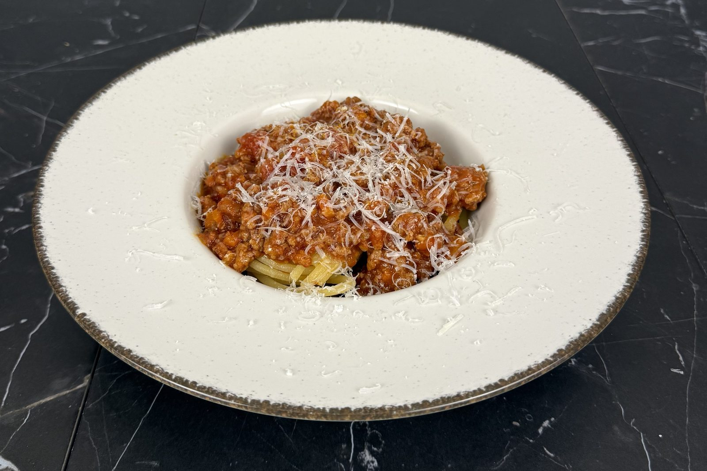

She’s the Goose

Suppers · Autumn
Beef, pork and sausage cooked low and slow with red wine and whole plum tomatoes, until the sauce is deep, rich and spoonable.
All the work comes at the start: soften the vegetables, brown the meat, add the wine and tomatoes. After that, the pot does the rest. Give it at least five hours on the lowest heat. Six or seven is even better.
For the ragù
To serve
Soften the vegetables. Warm a generous pour of olive oil in a heavy pot over medium heat. Add the shallot, carrot and celery, and cook, stirring, until soft and just beginning to caramelize. This is where the sauce gets its sweetness.
Brown the sausage. Add the sausage, break it up with a spoon, and cook until well browned.
Brown the beef and pork. Add the ground beef and pork, raise the heat, and stir until browned.
Add the wine. Pour in the wine and let it bubble until it has mostly cooked off.
Add the tomatoes. Add the tomatoes and their juice, crushing them lightly with your spoon or hands as they go in. Add the sugar, and season with salt and pepper.
Simmer. Cover and cook on the lowest heat for at least 5 hours, stirring now and then. Taste near the end and adjust the seasoning.
Serve. Spoon over spaghetti, or the pasta of your choice, cooked al dente, and finish with plenty of Parmesan.
Low heat and time are the whole recipe. Five hours is the minimum; six or seven is better.
Crushing whole plum tomatoes by hand leaves the sauce with a little more texture than canned crushed tomatoes.